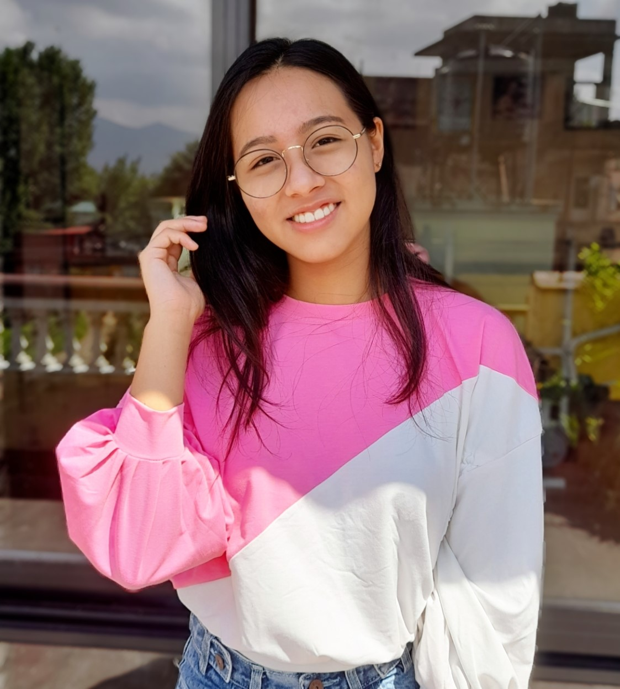

The Uplift Project
Mentee | Web Development | Public Speaking, June 2021 - Sept 2021
Mentioned as one of the active menteesSTUDENT | COMPUTER ENTHUSIAST | ART
My name is Yurisha Bajracharya and I'm a high school student at Kathmandu Model Secondary School. I am the Secretary of Computer Club at KMC Students Committee. I am interested in research and to explore Computer Science. I also adore art and painting. I have recently started to enjoy reading different genres of books.
I constantly push myself to step beyond my comfort zone by taking up new interests like dance and public speaking.
Degree Expected: 2023
Grade 11, 12 ongoing
Involvement:
Graduated: 2021
Primary Level - Grade 10GPA: 4 / 4
Involvement:
Mentee | Web Development | Public Speaking, June 2021 - Sept 2021
Mentioned as one of the active menteesSecretary | Computer Club, Jan 2022 - Present
Swarnim School, 2019 - 2021
Organized competitions, selected students for ECAs